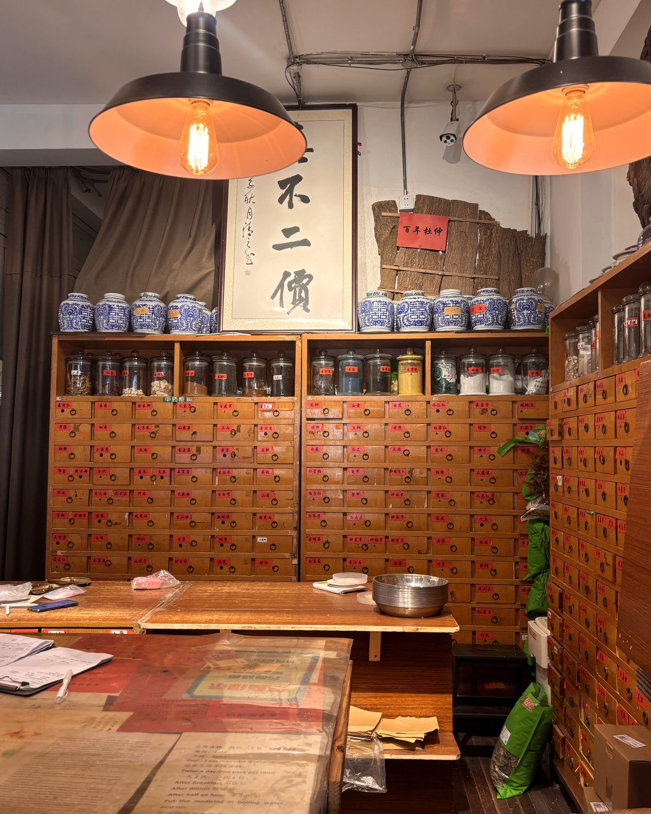
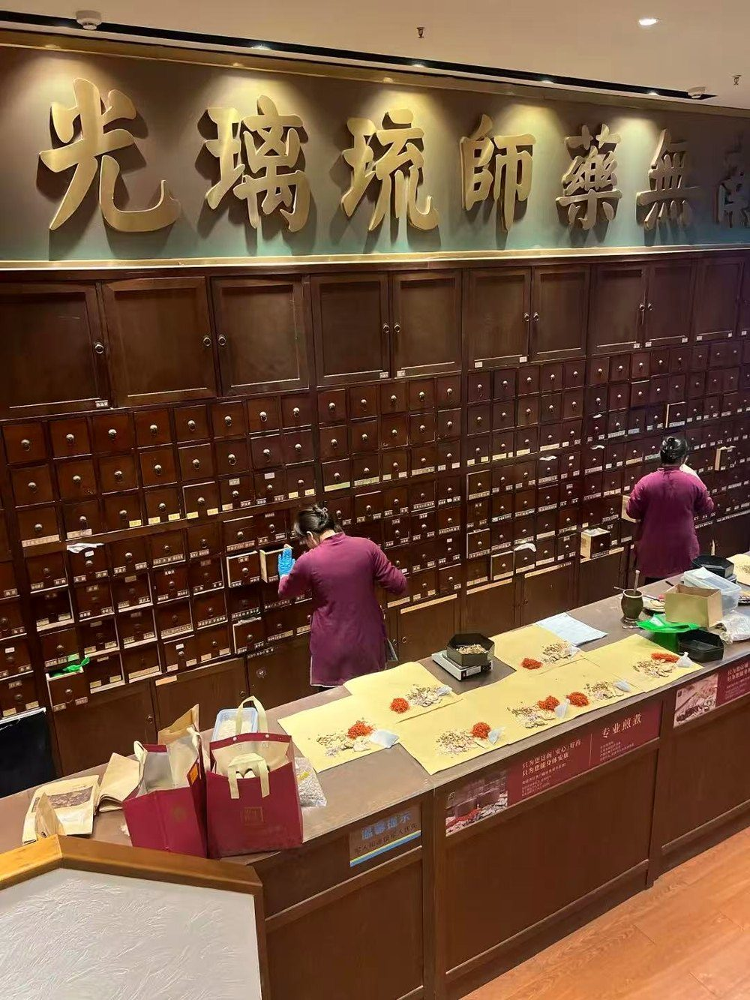
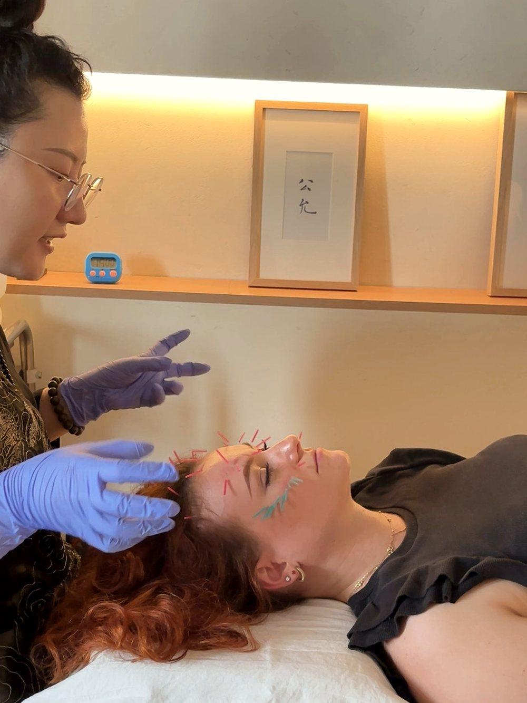
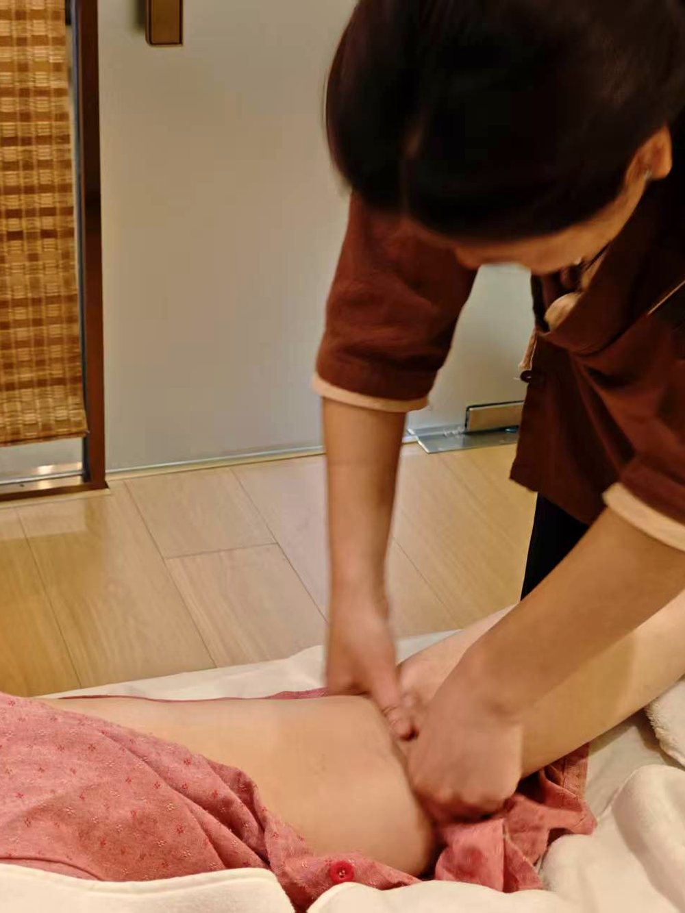
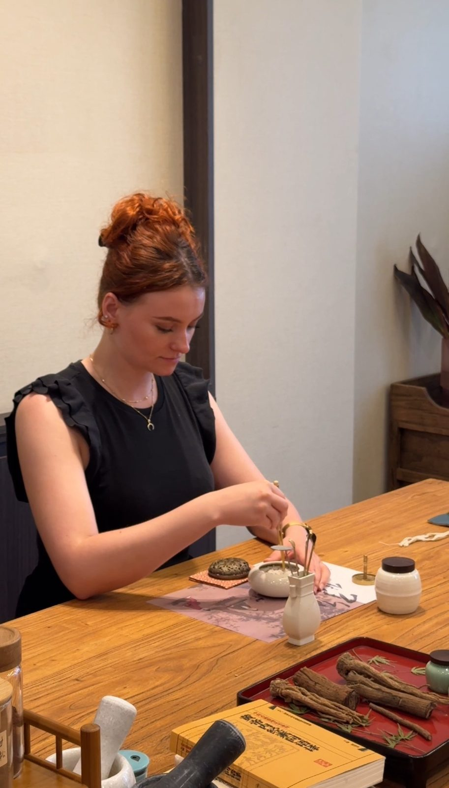
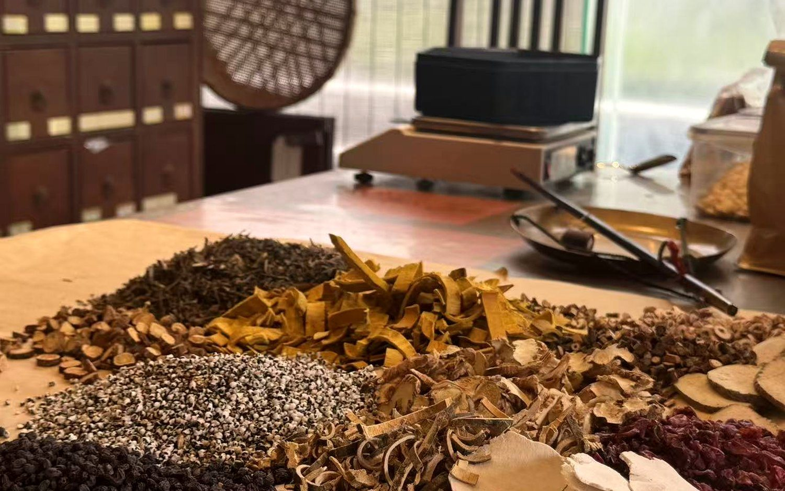

Fatigue & energy · France
From chronic fatigue to renewed energy
Pulse and tongue diagnosis, acupuncture, ear seeds — and a herbal tea she blended herself.
Read the story →Traditional Chinese Medicine
Acupuncture, herbs, touch and tea you can read about anywhere. In Shanghai, you can feel them — delivered by licensed physicians and practitioners, and fully supported in English. Three private pathways, and a cultural salon to share.
The pathways
Each private pathway is an individual session fully supported in English.
Don't have a health concern to bring? You don't need one. This is about restoration, rebalancing and understanding your own body as much as addressing any specific concern — and it's just as fine to come simply curious, letting your individual constitution guide the experience.
Travelling together? A small group can come at the same time for private pathways — you'll each have your own treatment room, then reconvene in a shared lounge afterwards over tea. Choose one pathway, or combine them across your visit.
Prices shown are indicative starting points, and every cost is confirmed with you before anything is arranged.
Pathway · clinical
A personalised clinical TCM consultation and treatment by a licensed physician, in a professional medical setting — for guests who want a focused session tailored to their body. After pulse and tongue diagnosis, your physician suggests a plan based on your condition.
Private, one guest at a time · 1–1.5 hours · A typical session includes:
From US$100–199 — diagnosis plus one on-site treatment. Optional herbal medicine is quoted separately.
Every session follows the same careful structure. What varies is the physician we match you with — their seniority and area of focus — and the clinic setting. Some concerns are best served by a particular specialist, and part of what we do is make that call for you. We’ll talk it through and confirm the cost before anything is booked.

Pathway · facial
A rejuvenating facial treatment that combines a traditional TCM reading with precision acupuncture — for natural radiance and a firmer-looking, more balanced complexion. Delivered privately by a licensed physician in a compliant medical setting.
Private, one guest at a time · 1.5–2 hours · Includes:
From US$199 · indicative; confirmed on consultation. Includes a herbal tea break.

Pathway · heritage
A heritage-lineage TCM wellness programme rooted in generations of family-transmitted knowledge — focused on long-term balance and preventive nourishment rather than treating illness.
Private, one guest at a time · 1.5–2 hours · Featured programme — Digestive Harmony:
From US$100 · indicative (other programmes around US$100–150). A personalised plan and confirmed pricing follow your consultation. Includes a herbal tea break.

In the heritage spirit · for groups
A warm, hands-on introduction to the philosophy and practice of Chinese medicine — designed for curiosity, not diagnosis. No prior knowledge needed, suitable for all ages, and a natural highlight for families, students and groups.
A guided session covers TCM thinking — Yin-Yang, the Five Elements, Qi and the meridians — followed by a hands-on experience, with herbal tea to finish.
Priced per group session · request a quote.

Hospitality · included
An in-depth, cross-cultural introduction to the philosophy and meaning of Traditional Chinese Medicine — guided in English, with every session.
A relaxed pause served with herbal tea and a tea snack — included with Heritage Wellness and Facial Acupuncture sessions.
A different lens
Some of the areas guests are most curious about are exactly where TCM's reasoning diverges most from conventional medicine. Rather than isolating a single symptom, it reads the body as one connected system and works with your constitution and overall balance. Guests often explore it for:
A whole-system view of recurring inflammation and immune balance, rather than one marker at a time.
The in-between states — fatigue, poor sleep, stress, low energy — that rarely show up as a diagnosis.
Easing discomfort and restoring movement after strain or injury, working with the whole body.
Menstrual and menopausal patterns, and men's wellbeing, approached through balance over time.
Every session starts with a reading of your individual constitution, so any guidance is shaped to you — not a generic protocol. These experiences are restorative and preventive in nature, and complement rather than replace conventional medical care.
Why experience it here
Traditional Chinese Medicine has been practised for more than two thousand years, and Shanghai sits among its most established institutions and lineages. HYA Wellness curates access to that depth — licensed physicians, heritage practitioners and refined settings — and translates it into an experience an international guest can simply step into and enjoy.
What to expect
We share what your session will involve, so nothing feels unfamiliar.
Pulse, tongue and a relaxed conversation about how you feel.
The treatment or experience for your chosen pathway, as assessed.
Clear, plain-English guidance — and tea to close.
Good to know
Yes. Every experience is fully supported in English. Depending on the session it is either led directly in English, or delivered by a Chinese-speaking physician or host with a dedicated English coordinator alongside you — so nothing is lost.
Yes. A private session is individual, but a small group of three or four can book the same location and time. You arrive together, each enjoy your own session in a separate private room, then reconvene in a shared lounge afterwards over tea to compare notes.
Not at all. TCM reads each person's individual constitution, so even with no obvious complaint, a physician can suggest ways to balance your energy and support overall wellbeing. Guests without specific concerns are welcome in private sessions — and the cultural salons are open to everyone.
Guests are often most curious about areas where TCM's approach differs from conventional medicine: chronic inflammation and immune balance, sub-health and low vitality, sports injury, pain and mobility, and women's and men's health. TCM reads these through a whole-system lens rather than a single symptom, and is restorative and preventive in nature — complementing, not replacing, conventional care.
Indicative starting points: clinical treatment US$100–199 on-site (diagnosis plus one treatment), heritage wellness from US$100, and facial acupuncture from US$199. Optional herbal medicine is quoted separately, and cultural salons are priced per group session. Because each person's needs differ, ranges can vary — and every cost is confirmed with you before it's incurred.
Yes. Private sessions, including facial acupuncture, take place in licensed hospitals or clinics and are delivered by clinically licensed physicians — the same level of qualification as a conventional doctor. HYA Wellness is the curator and host of the experience.
Yes. Group salons are designed for shared sessions of up to around ten guests and work beautifully for families with children, students and mixed-age groups.
Guest stories

Fatigue & energy · France
Pulse and tongue diagnosis, acupuncture, ear seeds — and a herbal tea she blended herself.
Read the story →
Whole-body balance · UK
Several small things that felt out of balance — and an explanation of how they connect.
Read the story →Tell us who's coming and what you're curious about — we'll shape the right experience and reply on WhatsApp.
Plan your visit on WhatsAppShort films from real visits — treatments, consultations and the places we take our guests.